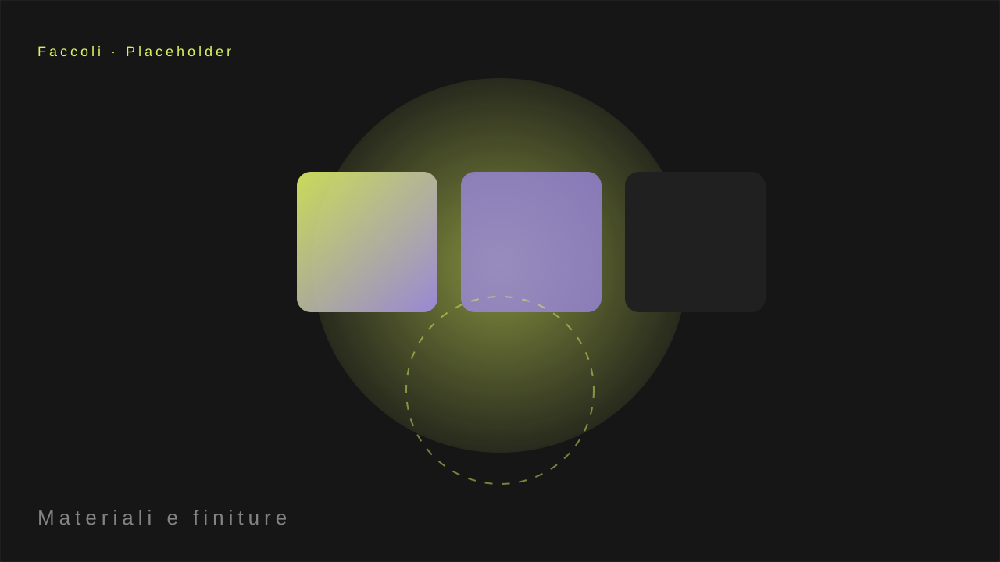

Marmogranito lavora con superfici in marmo, granito e pietra. Il problema è storico del settore: errori di configurazione e resi, perché il cliente sceglieva su cataloghi di foto senza vedere davvero il risultato.

Il materiale vero, non una foto
La svolta
Abbiamo costruito il primo configuratore 3D parametrico in Italia: l'utente sceglie materiale, formato, bordi e finitura in tempo reale, vedendo il piano di lavoro o la superficie nel suo insieme prima di ordinare.
Parametri reali, infinite combinazioni
Dal campione vero si parametrizzano materiale, formato, bordi e finiture: poche scelte che generano combinazioni fedeli, visibili prima dell'ordine.

I risultati
- Meno resi: il cliente vede il risultato prima di comprare.
- Meno errori: configurazione guidata, senza fraintendimenti.
- Valore percepito: un marchio che mostra i propri materiali in 3D reale.

Meno resi, più ordini corretti
La parametricità è la chiave: da pochi parametri reali nascono infinite combinazioni fedeli.
Il tuo materiale merita di essere visto davvero.
Ti mostro come un configuratore parametrico elimina resi ed errori.
Scopri come →